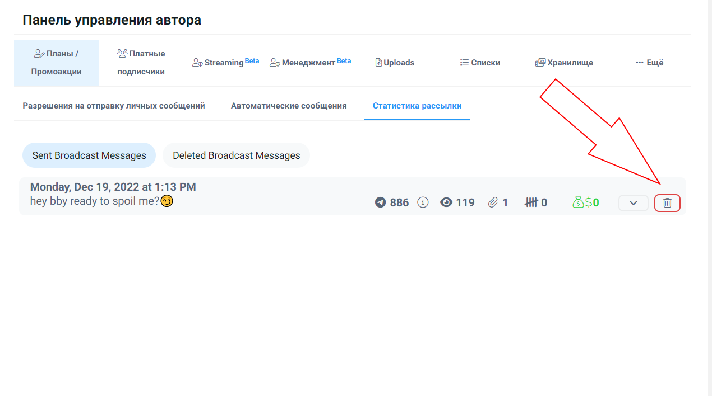

Суть работы оператором – постоянная отправка мемберам рассылки (mass message). Рассылка делается 1-2 раза за смену. На рассылку мемберы потихоньку начинают отвечать, и ты начинаешь вести с ними общение.
Рассылку мы делаем сразу после того, как ответили на непрочитанные сообщения и создали актуальные списки на день. Актуальный список – это список людей, с которыми в данный момент ведётся общение, и которых нужно, соответственно, удалить из рассылки, чтобы не терялась логика диалога.
Отправляем рассылку на список.
Внимательно исключаем из рассылки списки:
Кастом, Бомжи, Модели, без рассылки, Muted, на русском, актуальный список, который создали только что.
Очень важно исключать списки. Например: (Кастом, без рассылки) – это списки людей, которые ожидают кастомное видео или с ними уже ведется продолжительное общение, им рассылка не нужна. Модели просто не нуждаются в вашей рассылке. (Бомж, Muted) не заплатят вам, а отвечать на рассылку придется. Ну и актуальный список активных диалогов - с ними уже ведется общение, завлекать их в диалог рассылкой не имеет смысла.
Кстати, про бомжей. Бомжи - это только те, кто говорит, что денег у них нет и никогда не будет. Всем остальным обязательно нужно отвечать, игнорить никого нельзя!
Фото-инструкция, как делается рассылка:

Цель рассылки - завлечь в диалог, поэтому оптимальнее всего заканчивать сообщение вопросом. В рассылке не стоит часто использовать фотографии и делать акцент на пошлости.
После смены отменяем рассылку, которая была отправлена:
После того, как все рассылки были отправлены – отвечай на все поступающие сообщения, просматривай диалоги, в которых тебе не ответили и старайся возобновить общение с собеседником.
Оператор должен быть в курсе того, что происходит на странице модели, поэтому просматривай несколько последних постов модели и истории, если они есть. Собеседник может задать вопрос, который относится к посту или истории, оператор должен быть готов ответить на него.